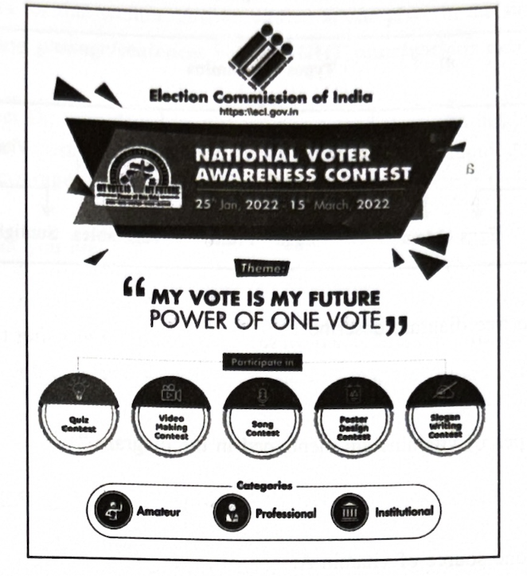
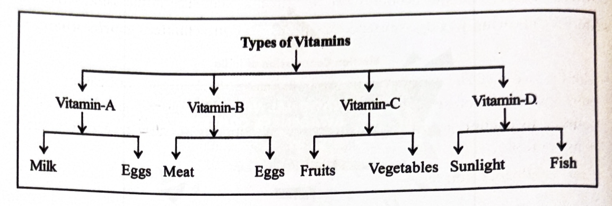
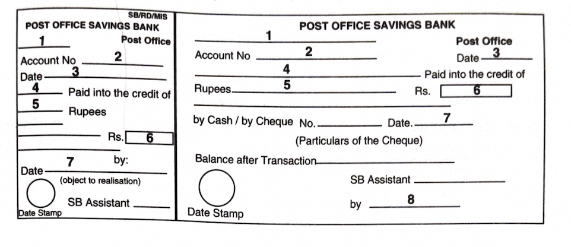

4. Read the following passage carefully and answer ANY FOUR questions
given after it in a word or a sentence each
4 × 1 = 4M
“The next morning he was back at Lawley Extension at ten from his car he made a dash for the sick bed. The patient was awake and looked very well. The assistant reported satisfactory pulse. The doctor put his tube at his heart, listened for a while, and told the sick man’s wife, “Don’t look so unhappy, lady. Hour husband will live to be ninety.” When they were going back to the hospital, the assistant, sitting beside him in the car asked, “is he going to live, sir?”.
“I will bet on it. He will live to be ninety. He has turned the corner. How he has survived this attack will be a puzzle to me all my life”. Replied the doctor.
i) How was the patient when the doctor visited him the following morning?
ii) What did the assistant report?
iii) What did the doctor say to Gopal’s wife?
iv) What would the doctor bet on?
v) What would be a puzzle to the doctor all his life?
vi) Write the idiom used in the passage to mean passed a very important point in an illness and began to improve.
vii) Find out the word used in the passage to mean an act of going somewhere quickly.
viii) The patient was awake — here the word patient is a noun and it means a sick person. Use the word patient in your own sentence as an adjective.
5. Read the following passage carefully and answer ANY FOUR questions
given after it in a word or in a sentence each.
4 × 1 = 4M
People who drafted our Constitution, also known as fathers of our constitution, did not intend that we just set up hovels, put students there, give untrained teachers, give them bad text books, no playgrounds and say we have complied with article 45. I dream to see students cultivate such a scientific spirit that they pursue their academics despite a Hindu V.C. is heading Aligarh Muslim University or a Muslim V.C. is administering Benares Hindu University. These are the views of Mohammadali Carim Chagla (30.9.1900–19.02.1982), expressed as the Union Education Minister (1963–1966). Look at the quality and equality he aimed at. Sixty years have passed since then. Yet, the wait continues. People like Chaglas are needed in multiples. He was a jurist, diplomat, minister with commitment to the cause of the country. Opposing the ideology of communal-based two nations, he broke ranks with his long-term associates. Education system needs such men to make it a man-making system!
Answer the following questions.
i) About our education system, this passage expresses ________. Fill in
the blank choosing from the list.
a) happiness b) anger c) satisfaction
d) anguish
ii) Are we complying with the provisions of our constitution regarding providing education? Support your answer with a sentence from the passage.
iii) When can you say that students are cultivating the scientific spirit?
iv) The views quoted in the passage were expressed sixty years ago. Are they relevant today? Provide proof from the passage that supports your answer.
v) Why does education system need men like Chaglas?
vi) What did Chagla do to oppose communal-based nations ideology?
vii) Find out the idiom used in the passage that means dissociated from.
viii) Write the one-word substitute used in the passage that can replace a set of ideas, beliefs etc held by a group of people.
6. Study the advertisement given below and answer ANY FOUR questions given after it. 4 × 1 = 4M

i) What is the advertisement about?
ii) What is the theme of NVAC?
iii) Name any two areas in which the contest takes place.
iv) Who has issued this advertisement?
v) How many categories of participants can contest the competition?
vi) Write the antonym, from the advertisement, of the word amateur.
vii) When is the contest scheduled?
viii) Pick the synonym of the word consciousness from the advertisement.
7. Study the tree diagram and answer ANY FOUR questions given after it 4 × 1 = 4M

i) What does the tree diagram describe?
ii) How many types of vitamins are mentioned in the diagram?
iii) Mention any one source of vitamin A.
iv) Which vitamin does meat provide us?
v) From which food do we get vitamin C?
vi) Sunlight helps us get _______. (Fill in the blank)
vii) Eggs are rich in vitamins _______ and _______. (Fill in the blanks.)
viii) Which vitamin do we get from milk?
(NOTE: Answers for this section must be written at one place in the same serial order)
8. Rewrite the following passage/sentences using EIGHT punctuation marks wherever necessary. 8 × ½ = 4M
a) The day we met Dr. vasudevan he was waving a special gazette notification of the ministry of environment & forests dated 4th February 2011 directing all municipal authorities across the country to encourage use of plastic waste by adopting suitable technology such as in road construction...
b) How intellegent you are
9. Match ANY FOUR of the following words in Column-A with their meanings/definitions in Column-B 4 × 1 = 4M
| Column A | Column B |
|---|---|
| 1) Invincible | a) about to happen in the immediate future |
| 2) Imminent | b) (of people) who cannot be corrected or changed |
| 3) Gymnasium | c) too strong to be defeated |
| 4) Glutton | d) all the water of the earth |
| 5) Hydrosphere | e) the room that has equipment for physical exercises |
| 6) Incorrigible | f) one who eats excessively |
10. Fill in ANY FOUR blanks in the following sentences with suitable idiomatic expressions given below. Make necessary changes in the idioms if needed. 4 × 1 = 4M
| Blow one’s horn | Hit the nail on the head | Every cloud has a silver lining |
| Face the music | Burn the midnight oil | Spill the beans |
i) She ________ with her response.
ii) Having lost his character, he has to ________.
iii) People avoid her as she constantly ________.
iv) If we hadn’t missed the plane, we wouldn’t have met you. It is rightly said ________.
v) I have to present this report by to-morrow, so I must ________ tonight.
vi) They were afraid he would ________.
11. Make FOUR meaningful sentences from the verb pattern given below. 4 × 1 = 4M
An example is given as a model.
| There | verb - ‘be’ | Subject | Adverbial phrase |
|---|---|---|---|
| There | are | five rooms | in the house |
1) ____________________________
2) ____________________________
3) ____________________________
4) ____________________________
12. Fill in ANY EIGHT blanks of the given bank form on the information furnished below 8 × ½ = 4M
You are P Neelaveni. Your account Number is 1981 in Mahaboobnagar Post Office. Deposit an amount of Rs. 6000/- into your account by filling in the post office savings bank form.

1) ____________________________
2) ____________________________
3) ____________________________
4) ____________________________
5) ____________________________
6) ____________________________
7) ____________________________
8) ____________________________
9) ____________________________
10) ____________________________
13. Prepare an SOP 1 × 4 = 4M
An Indian student, who completed his BTech in Computer Science is applying for a Master’s Programme in the US. Prepare an SOP.
14. You are disappointed to know that you have not been selected to represent your college in the under-19 Cricket Tournament. Write a letter to your coach requesting him to reconsider his decision and offer you one more chance to prove yourself. 1 × 4 = 4M
(OR)
Write a letter to your sister describing the importance of English as a global language.
15. Read the following passage and make notes.
1 × 4 = 4M
Add a suitable Title.
Hobbies bring many benefits that usually make them more than worth the time they require. Popular hobbies include playing musical instruments, dance, sports and gardening.
For those who aren’t overly stressed, and may actually be under-stimulated, hobbies provide a nice source of ‘eustress’, the healthy kind of stress that we all need to remain feeling excited about life. If the rest of your life is somewhat dull or uninspiring, hobbies can provide meaning and fun and can provide just the right amount of challenge.
Many hobbies lend themselves to group activities: golfing, knitting and creative writing groups are good examples. Hobbies that connect you with others can bring the added benefit of social support which can bring meaning to life in a fun way. The friends you have fun with can become some of your best friends.
Hobbies bring a sense of fun and freedom to life that can help to minimize the impact of chronic stress. Those who feel overwhelmed at a job, for example, can benefit from hobbies because they provide an outlet for stress and something to look forward to after a hard and stressful job. A study found that enjoyable activities performed during leisure time were associated with lower blood pressure and lower levels of depression.
16. Mark the stress for Any Eight of the following words. 8 × ½ = 4 Marks
i) record (noun) ii) examination
iii) enthusiastic iv)
handshake v) resistant
vi) canteen vii) suspect
viii) mother ix)
authorize x) created
17. Write a dialogue between a girl and her mother regarding discipline 1 × 4 = 4M
(OR)
Write a dialogue between a salesman and a customer who has been sold a defective T.V.